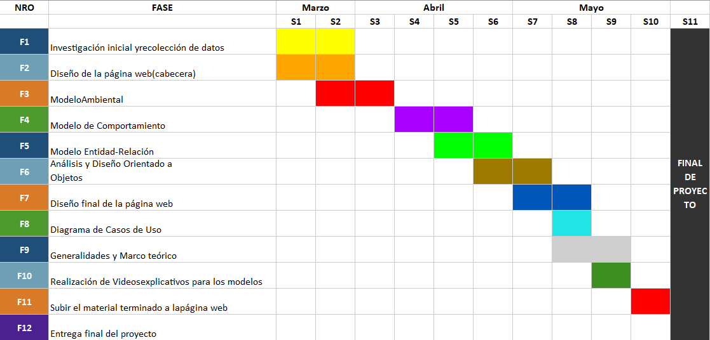
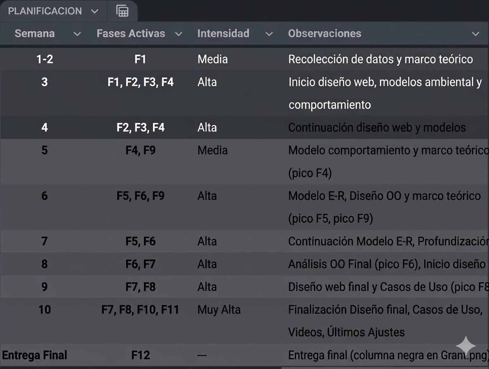

Marco Teórico
Análisis completo y documentación teórica del sistema de gestión para la cafetería CALIENTE. Incluye introducción, antecedentes, formulación del problema, metodología y planificación.
Generalidades y Marco Teórico
Introducción
Presentación del contexto, justificación y objetivos generales del proyecto.Caliente Café es una cafetería dedicada a ofrecer una experiencia de calidad a sus clientes. En la búsqueda de fundamentar y planificar el desarrollo de una solución tecnológica que automatice y optimice los procesos críticos de ventas, control de inventario y generación de reportes, los cuales actualmente se gestionan de manera manual o mediante herramientas desconectadas.
Antecedentes
Situación actual del problema a resolver.Caliente Café es un negocio del sector gastronómico cuya operación principal es la venta de café, bebidas y productos de repostería. Con el crecimiento de su clientela y la diversificación de su menú, la administración ha identificado que la dependencia de procesos manuales para la toma de pedidos, el cálculo de precios, el registro de ventas y el control del inventario se ha convertido en un factor limitante para su eficiencia, escalabilidad y capacidad de análisis.
Planteamiento del problema
Descripción detallada del problema que se busca resolver con el sistema.¿Cómo diseñar un Sistema de Ventas integrado y automatizado para Caliente Café que, mediante modelos de análisis estructurado y orientado a objetos, resuelva las ineficiencias operativas, proporcione control en tiempo real del inventario y ofrezca reportes analíticos confiables para apoyar la toma de decisiones estratégicas?
Árbol de problemas
Representación visual de las causas y efectos del problema principal.El árbol de problemas es una herramienta visual que permite identificar la causa raíz de un problema, sus efectos y sus subproblemas.

Formulación del problema
Pregunta de investigación que guía el desarrollo del proyecto.¿Cómo diseñar e implementar un sistema de información que optimice los procesos de gestión de pedidos, inventario y reportes para la cafetería "CALIENTE"?
Propósito del estudio
Objetivos generales y específicos que se pretenden alcanzar con el proyecto.Objetivo General:
Diseñar un sistema de ventas automatizado bajo el paradigma del análisis estructurado, UML y Orientado a Objetos para la cafetería Caliente Café, en forma eficiente las ventas, el inventario de productos y la base de datos de clientes con el fin de mejorar la organización, la toma de decisiones y la atención al cliente.
Objetivos Específicos:
- Analizar los procesos actuales de la cafetería
- Realizar el levantamiento y modelado de los procesos actuales de venta e inventario mediante el Análisis Estructurado, elaborando el Diagrama de Contexto, los Diagramas de Flujo de Datos por niveles y el Diagrama Entidad-Relación.
- Modelar la estructura estática y dinámica del sistema propuesto mediante el Análisis Orientado a Objetos, desarrollando el Diagrama de Clases UML, los Diagramas de Casos de Uso y las especificaciones textuales de los casos de uso críticos.
Método, medios e instrumentos de investigación
Descripción de la metodología, herramientas y técnicas que se utilizarán en el desarrollo del proyecto.Método:
Se utilizó un enfoque cuantitativo con elementos cualitativos, ya que el objetivo fue identificar las necesidades específicas del negocio a través de datos concretos, pero también comprender mejor los procesos actuales del local y las expectativas del propietario respecto al sistema de ventas.
Instrumentos:
Planificación de actividades
Cronograma y planificación detallada de las actividades del proyecto.
